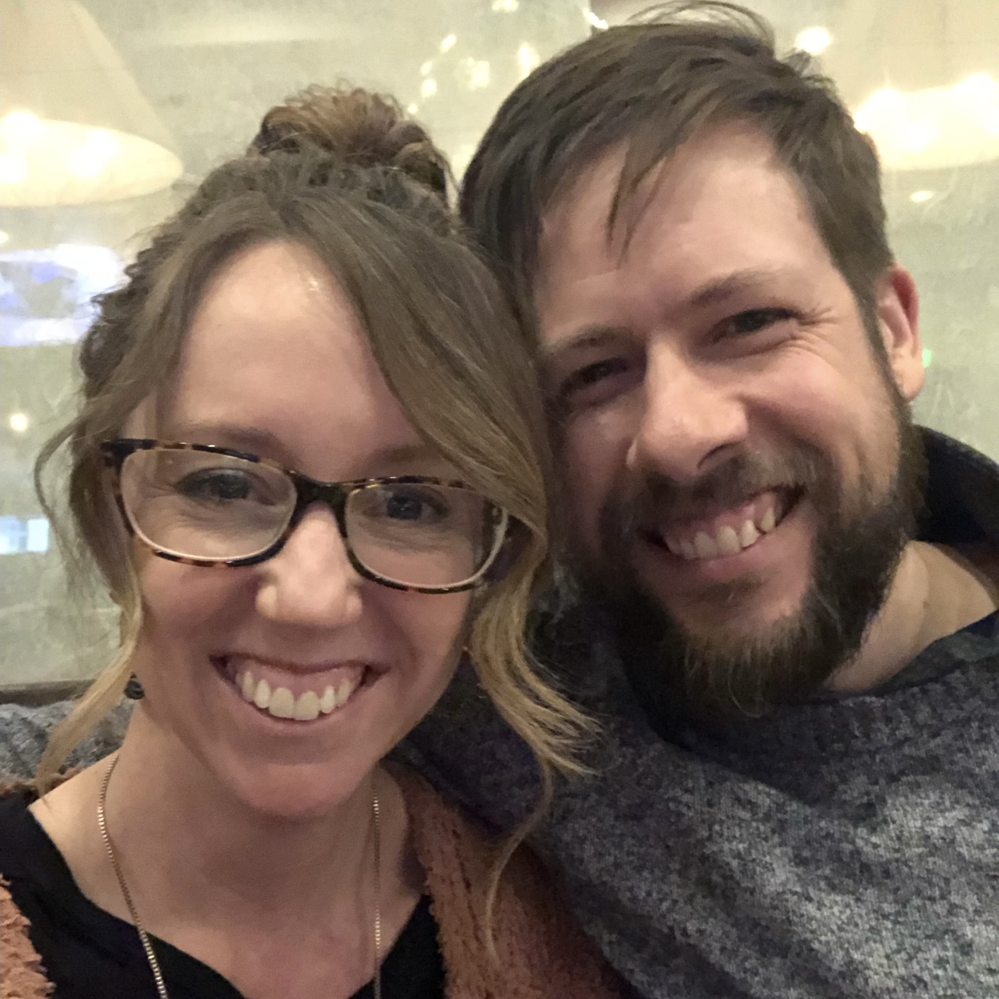
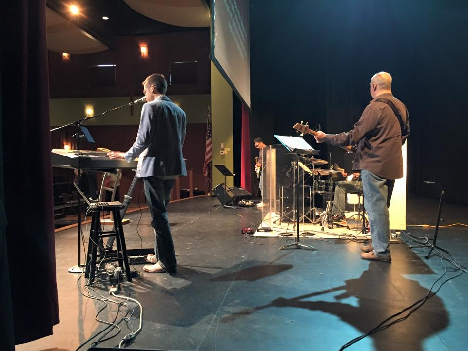

About Me
Hi! My name is Stephen, and this is the first website I’ve coded. I live in Illinois with my lovely wife, our six kids, a dog, and a pig—and some chickens too. I am creative and love thinking about things conceptually. I enjoy board games and puns—I am king of dad jokes. I nerd out on typography. I am too agreeable, but not as much as when I was younger. Learning to code is the next adventure I’m undertaking to grow and adapt.
Music
Music has been an important part of my life. I began piano lessons at age five and have played and taught ever since. As a kid, I would spend hours improvising. Now, I write music, teach music, and lead worship. I sing and play piano, violin, a little guitar, and even less cello. There’s really nothing else like music. Oddly enough, I tend not to listen to music very much. Listening to music usually makes me want to make music.
Ministry
My ministry began at the piano. I led my church youth group in worship beginning in 7th grade. After high school, I went on to study worship arts at Judson College. From there, I’ve worked in numerous churches and parachurch ministries.
Coding

While I am coming to coding later in life, my first experience was actually on my dad’s green-monochrome computer in the late 80’s. We would write madlib programs. They were hilarious and fun. Coding taught me about variables which came in real handy in algebra class. My capacity for creativity as well as my enthusiasm for learning and understanding how and why things work will serve me well in this new endeavor.